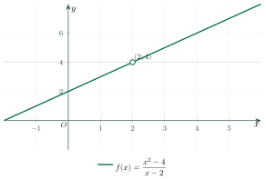
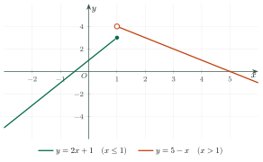
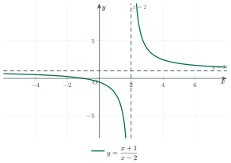
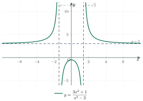

Limits of FunctionsGiới hạn của hàm số
Grade 11 · Topic: LimitsLớp 11 · Chủ đề: Giới hạn
1Lesson IntroductionGiới thiệu bài học
Learning goalsMục tiêu bài học
By the end of this lesson you can:
Sau bài học này, em có thể:
understand \(\lim_{x\to a}f(x)=L\) and one-sided limits from a graph;
hiểu \(\lim_{x\to a}f(x)=L\) và giới hạn một bên qua đồ thị;
compute limits by substitution and by factoring;
tính giới hạn bằng cách thay trực tiếp và phân tích thành nhân tử;
find limits at infinity of rational functions;
tìm giới hạn tại vô cực của hàm phân thức;
connect limits with vertical and horizontal asymptotes.
liên hệ giới hạn với tiệm cận đứng và tiệm cận ngang.
2Mathematical VocabularyTừ vựng Toán học
limit – the value that \(f(x)\) gets close to when \(x\) gets close to \(a\).
Giới hạn – giá trị mà \(f(x)\) tiến sát khi \(x\) tiến sát \(a\).
approaches – gets closer and closer to: \(x\to a\).
Tiến tới – ngày càng gần: \(x\to a\).
left-hand limit – the limit when \(x\) approaches \(a\) from the left: \(x\to a^-\).
Giới hạn bên trái – giới hạn khi \(x\) tiến tới \(a\) từ phía bên trái: \(x\to a^-\).
right-hand limit – the limit when \(x\) approaches \(a\) from the right: \(x\to a^+\).
Giới hạn bên phải – giới hạn khi \(x\) tiến tới \(a\) từ phía bên phải: \(x\to a^+\).
infinity – not a number; it means that the values grow without end.
Vô cực – không phải một số; nghĩa là giá trị tăng mãi không dừng.
substitution – replacing \(x\) by the number \(a\).
Thay trực tiếp – thay \(x\) bằng số \(a\).
factor – write an expression as a product.
Phân tích thành nhân tử – viết biểu thức thành tích.
discontinuity – a point where the graph has a hole, a jump or an asymptote.
Điểm gián đoạn – điểm mà đồ thị có lỗ thủng, chỗ đứt hoặc tiệm cận.
3Useful English PhrasesCụm từ tiếng Anh thường gặp
Find the limit.
Tìm giới hạn.
Evaluate \(\lim_{x\to 3}\dfrac{x^2-9}{x-3}\).
Tính \(\lim_{x\to 3}\dfrac{x^2-9}{x-3}\).
Find the left-hand and the right-hand limits.
Tìm giới hạn bên trái và giới hạn bên phải.
The limit does not exist.
Giới hạn không tồn tại.
Find the limit as \(x\) tends to infinity.
Tìm giới hạn khi \(x\) tiến tới vô cực.
Find the equations of the asymptotes.
Tìm phương trình các đường tiệm cận.
4Prerequisite ReviewÔn tập kiến thức nền
Factoring. \(x^2-9=(x-3)(x+3)\) and \(x^2-4=(x-2)(x+2)\) (difference of two squares).
Phân tích đa thức. \(x^2-9=(x-3)(x+3)\) và \(x^2-4=(x-2)(x+2)\) (hiệu hai bình phương).
Cancelling. For \(x\ne 3\): \(\dfrac{(x-3)(x+3)}{x-3}=x+3\).
Rút gọn. Với \(x\ne 3\): \(\dfrac{(x-3)(x+3)}{x-3}=x+3\).
Big numbers. If \(x\) is very large, then \(\dfrac1x\) is very close to 0.
Số rất lớn. Nếu \(x\) rất lớn thì \(\dfrac1x\) rất gần 0.
5TheoryLý thuyết
5.1 The idea of a limitÝ tưởng về giới hạn
Definition (informal)Định nghĩa (trực quan)
We write \(\lim_{x\to a}f(x)=L\) if \(f(x)\) gets as close to \(L\) as we want when \(x\) gets close enough to \(a\) (\(x\ne a\)). The value \(f(a)\) is not needed.
Viết \(\lim_{x\to a}f(x)=L\) nếu \(f(x)\) tiến sát \(L\) tùy ý khi \(x\) đủ gần \(a\) (\(x\ne a\)). Không cần biết \(f(a)\).
The limit exists exactly when the left-hand limit and the right-hand limit exist and are equal.
Giới hạn tồn tại đúng khi giới hạn bên trái và giới hạn bên phải tồn tại và bằng nhau.


5.2 Computing limitsCách tính giới hạn
Limit lawsQuy tắc giới hạn
For polynomials, substitution gives the limit: \(\lim_{x\to a}P(x)=P(a)\).
Với đa thức, thay trực tiếp cho ra giới hạn: \(\lim_{x\to a}P(x)=P(a)\).
Form 0/0: factor and cancelDạng 0/0: phân tích và rút gọn
If substitution gives \(\dfrac00\), factor the numerator and the denominator, cancel the common factor \((x-a)\), then substitute again.
Nếu thay trực tiếp được \(\dfrac00\), hãy phân tích thành nhân tử tử và mẫu, rút gọn thừa số chung \((x-a)\), rồi thay lại.
5.3 Infinite limits and asymptotesGiới hạn vô cực và tiệm cận

Asymptotes from limitsTiệm cận từ giới hạn
If \(\lim_{x\to a^\pm}f(x)=\pm\infty\), the line \(x=a\) is a vertical asymptote. If \(\lim_{x\to\pm\infty}f(x)=b\), the line \(y=b\) is a horizontal asymptote.
Nếu \(\lim_{x\to a^\pm}f(x)=\pm\infty\) thì \(x=a\) là tiệm cận đứng. Nếu \(\lim_{x\to\pm\infty}f(x)=b\) thì \(y=b\) là tiệm cận ngang.
5.4 Limits at infinity of rational functionsGiới hạn tại vô cực của hàm phân thức
Divide the numerator and the denominator by the highest power of \(x\). Compare the degrees: if the degrees are equal, the limit is the ratio of the leading coefficients; if the numerator has the smaller degree, the limit is 0.
Chia tử và mẫu cho lũy thừa cao nhất của \(x\). So sánh bậc: nếu bậc bằng nhau, giới hạn bằng tỉ số hai hệ số cao nhất; nếu bậc tử nhỏ hơn bậc mẫu, giới hạn bằng 0.

6Worked ExamplesVí dụ có lời giải
ExampleVí dụ 1BasicCơ bản – The form 0/0Dạng 0/0
Find \(\lim_{x\to 3}\dfrac{x^2-9}{x-3}\).
Tìm \(\lim_{x\to 3}\dfrac{x^2-9}{x-3}\).
Analysis: Substituting \(x=3\) gives \(\dfrac00\), so we factor.
Phân tích: Thay \(x=3\) được \(\dfrac00\) nên ta phân tích thành nhân tử.
\(x^2-9=(x-3)(x+3)\).
\(x^2-9=(x-3)(x+3)\).
For \(x\ne 3\): \(\dfrac{x^2-9}{x-3}=x+3\).
Với \(x\ne 3\): \(\dfrac{x^2-9}{x-3}=x+3\).
\(\lim_{x\to 3}(x+3)=6\).
\(\lim_{x\to 3}(x+3)=6\).
ExampleVí dụ 2IntermediateTrung bình – Limit at infinityGiới hạn tại vô cực
Find \(\lim_{x\to+\infty}\dfrac{3x^2+1}{x^2-2}\).
Tìm \(\lim_{x\to+\infty}\dfrac{3x^2+1}{x^2-2}\).
Analysis: The highest power is \(x^2\). Divide the numerator and the denominator by \(x^2\).
Phân tích: Lũy thừa cao nhất là \(x^2\). Chia tử và mẫu cho \(x^2\).
\(\dfrac{3x^2+1}{x^2-2}=\dfrac{3+\frac{1}{x^2}}{1-\frac{2}{x^2}}\).
\(\dfrac{3x^2+1}{x^2-2}=\dfrac{3+\frac{1}{x^2}}{1-\frac{2}{x^2}}\).
When \(x\to+\infty\): \(\dfrac1{x^2}\to 0\), so the limit is \(\dfrac{3+0}{1-0}=3\).
Khi \(x\to+\infty\): \(\dfrac1{x^2}\to 0\) nên giới hạn là \(\dfrac{3+0}{1-0}=3\).
ExampleVí dụ 3AdvancedNâng cao – One-sided limits and asymptotesGiới hạn một bên và tiệm cận
For \(f(x)=\dfrac{x+1}{x-2}\), find \(\lim_{x\to 2^+}f(x)\), \(\lim_{x\to 2^-}f(x)\), \(\lim_{x\to\pm\infty}f(x)\) and the asymptotes (see the figure in 5.3).
Với \(f(x)=\dfrac{x+1}{x-2}\), tìm \(\lim_{x\to 2^+}f(x)\), \(\lim_{x\to 2^-}f(x)\), \(\lim_{x\to\pm\infty}f(x)\) và các tiệm cận (xem hình ở mục 5.3).
Analysis: Near \(x=2\) the numerator is close to 3 and the denominator is close to 0. Look at the sign of the denominator on each side.
Phân tích: Gần \(x=2\), tử gần 3 còn mẫu gần 0. Hãy xét dấu của mẫu ở mỗi phía.
\(x\to 2^+\): \(x-2\gt 0\) is tiny, \(x+1\approx 3\), so \(f(x)\to+\infty\).
\(x\to 2^+\): \(x-2\gt 0\) rất nhỏ, \(x+1\approx 3\) nên \(f(x)\to+\infty\).
\(x\to 2^-\): \(x-2\lt 0\) is tiny, so \(f(x)\to-\infty\). The two one-sided limits are different.
\(x\to 2^-\): \(x-2\lt 0\) rất nhỏ nên \(f(x)\to-\infty\). Hai giới hạn một bên khác nhau.
Divide by \(x\): \(f(x)=\dfrac{1+1/x}{1-2/x}\to 1\) when \(x\to\pm\infty\).
Chia cho \(x\): \(f(x)=\dfrac{1+1/x}{1-2/x}\to 1\) khi \(x\to\pm\infty\).
7PracticeBài tập luyện tập
A. Multiple ChoiceA. Trắc nghiệm
Find \(\lim_{x\to 2}(x^2+3x)\).
Tìm \(\lim_{x\to 2}(x^2+3x)\).
Answer: a. Substitute: \(4+6=10\).
Đáp án a. Thay trực tiếp: \(4+6=10\).
Find \(\lim_{x\to 1}\dfrac{x^2-1}{x-1}\).
Tìm \(\lim_{x\to 1}\dfrac{x^2-1}{x-1}\).
Answer: c. \(\dfrac{x^2-1}{x-1}=x+1\to 2\).
Đáp án c. \(\dfrac{x^2-1}{x-1}=x+1\to 2\).
Find \(\lim_{x\to+\infty}\dfrac1x\).
Tìm \(\lim_{x\to+\infty}\dfrac1x\).
Answer: a. For very large \(x\), \(\dfrac1x\) is close to 0.
Đáp án a. Với \(x\) rất lớn, \(\dfrac1x\) rất gần 0.
B. True or FalseB. Đúng hoặc sai
\(\lim_{x\to 0}\dfrac1x=+\infty\).
\(\lim_{x\to 0}\dfrac1x=+\infty\).
False. On the right the values go to \(+\infty\), on the left to \(-\infty\). The limit does not exist.
Sai. Bên phải giá trị tiến tới \(+\infty\), bên trái tiến tới \(-\infty\). Giới hạn không tồn tại.
C. Short AnswerC. Trả lời ngắn
Find \(\lim_{x\to -1}(2x+5)\).
Tìm \(\lim_{x\to -1}(2x+5)\).
Enter a number.
Nhập một số.
Answer: 3. \(2\cdot(-1)+5=3\).
Đáp số: 3. \(2\cdot(-1)+5=3\).
Find \(\lim_{x\to 3}\dfrac{x^2-9}{x-3}\).
Tìm \(\lim_{x\to 3}\dfrac{x^2-9}{x-3}\).
Enter a number.
Nhập một số.
Answer: 6. \(x+3\to 6\).
Đáp số: 6. \(x+3\to 6\).
A. Multiple ChoiceA. Trắc nghiệm
Find \(\lim_{x\to -1}(x^2-4x)\).
Tìm \(\lim_{x\to -1}(x^2-4x)\).
Answer: b. \(1+4=5\).
Đáp án b. \(1+4=5\).
Find \(\lim_{x\to 2}\dfrac{x^2-4}{x-2}\).
Tìm \(\lim_{x\to 2}\dfrac{x^2-4}{x-2}\).
Answer: c. \(x+2\to 4\).
Đáp án c. \(x+2\to 4\).
Find \(\lim_{x\to+\infty}\dfrac{2x+1}{x+3}\).
Tìm \(\lim_{x\to+\infty}\dfrac{2x+1}{x+3}\).
Answer: b. Divide by \(x\): \(\dfrac{2+1/x}{1+3/x}\to 2\).
Đáp án b. Chia cho \(x\): \(\dfrac{2+1/x}{1+3/x}\to 2\).
B. True or FalseB. Đúng hoặc sai
\(\lim_{x\to 0}\dfrac{|x|}{x}=1\).
\(\lim_{x\to 0}\dfrac{|x|}{x}=1\).
False. On the right the quotient is 1, on the left it is \(-1\). The limit does not exist.
Sai. Bên phải thương bằng 1, bên trái bằng \(-1\). Giới hạn không tồn tại.
C. Short AnswerC. Trả lời ngắn
Find \(\lim_{x\to 4}(3x-2)\).
Tìm \(\lim_{x\to 4}(3x-2)\).
Enter a number.
Nhập một số.
Answer: 10. \(12-2=10\).
Đáp số: 10. \(12-2=10\).
Find \(\lim_{x\to -2}\dfrac{x^2-4}{x+2}\).
Tìm \(\lim_{x\to -2}\dfrac{x^2-4}{x+2}\).
Enter a number.
Nhập một số.
Answer: \(-4\). \(x-2\to -4\).
Đáp số: \(-4\). \(x-2\to -4\).
A. Multiple ChoiceA. Trắc nghiệm
Find \(\lim_{x\to 3}(x^2-2x)\).
Tìm \(\lim_{x\to 3}(x^2-2x)\).
Answer: a. \(9-6=3\).
Đáp án a. \(9-6=3\).
Find \(\lim_{x\to -3}\dfrac{x^2-9}{x+3}\).
Tìm \(\lim_{x\to -3}\dfrac{x^2-9}{x+3}\).
Answer: a. \(x-3\to -6\).
Đáp án a. \(x-3\to -6\).
Find \(\lim_{x\to-\infty}\dfrac{3x^2+1}{x^2+5}\).
Tìm \(\lim_{x\to-\infty}\dfrac{3x^2+1}{x^2+5}\).
Answer: c. The degrees are equal: \(\dfrac31=3\).
Đáp án c. Hai bậc bằng nhau: \(\dfrac31=3\).
B. True or FalseB. Đúng hoặc sai
If \(f(a)\) is not defined, then \(\lim_{x\to a}f(x)\) cannot exist.
Nếu \(f(a)\) không xác định thì \(\lim_{x\to a}f(x)\) không thể tồn tại.
False. Example: \(\dfrac{x^2-4}{x-2}\) is not defined at 2 but its limit there is 4.
Sai. Ví dụ \(\dfrac{x^2-4}{x-2}\) không xác định tại 2 nhưng giới hạn tại đó bằng 4.
C. Short AnswerC. Trả lời ngắn
Find \(\lim_{x\to -2}(5-2x)\).
Tìm \(\lim_{x\to -2}(5-2x)\).
Enter a number.
Nhập một số.
Answer: 9. \(5+4=9\).
Đáp số: 9. \(5+4=9\).
Find \(\lim_{x\to 5}\dfrac{x^2-25}{x-5}\).
Tìm \(\lim_{x\to 5}\dfrac{x^2-25}{x-5}\).
Enter a number.
Nhập một số.
Answer: 10. \(x+5\to 10\).
Đáp số: 10. \(x+5\to 10\).
8Common MistakesLỗi thường gặp
Math knowledge. Thinking that \(\lim_{x\to a}f(x)=f(a)\) always. If \(f\) has a hole or a jump at \(a\), the two numbers may differ.
Kiến thức Toán. Cho rằng \(\lim_{x\to a}f(x)=f(a)\) luôn đúng. Nếu \(f\) có lỗ thủng hoặc chỗ đứt tại \(a\) thì hai số này có thể khác nhau.
Using formulas. Writing \(\dfrac00=0\) or \(\dfrac00=1\). It is an undefined form: factor first.
Dùng công thức. Viết \(\dfrac00=0\) hoặc \(\dfrac00=1\). Đây là dạng chưa xác định: phải phân tích trước.
Infinity. Treating \(\infty\) as a number, for example \(\infty-\infty=0\).
Vô cực. Coi \(\infty\) là một số, chẳng hạn \(\infty-\infty=0\).
One-sided limits. Saying \(\lim_{x\to 0}\dfrac1x=+\infty\) by looking at the right side only.
Giới hạn một bên. Kết luận \(\lim_{x\to 0}\dfrac1x=+\infty\) chỉ vì nhìn phía bên phải.
9Lesson SummaryTổng kết
\(\lim_{x\to a}f(x)=L\) means \(f(x)\) is close to \(L\) when \(x\) is close to \(a\); \(f(a)\) is not needed.
\(\lim_{x\to a}f(x)=L\) nghĩa là \(f(x)\) gần \(L\) khi \(x\) gần \(a\); không cần \(f(a)\).
The limit exists when the left-hand and the right-hand limits are equal.
Giới hạn tồn tại khi giới hạn bên trái và bên phải bằng nhau.
For \(\dfrac00\): factor, cancel the common factor, substitute again.
Với dạng \(\dfrac00\): phân tích, rút gọn thừa số chung, rồi thay lại.
At infinity divide by the highest power of \(x\); equal degrees give the ratio of the leading coefficients.
Tại vô cực chia cho lũy thừa cao nhất của \(x\); bậc bằng nhau thì giới hạn là tỉ số hai hệ số cao nhất.
Key English phrases: find the limit; left-hand and right-hand limits; the limit does not exist; asymptote.
Cụm tiếng Anh cần nhớ: find the limit (tìm giới hạn); left-hand and right-hand limits (giới hạn bên trái và bên phải); the limit does not exist (giới hạn không tồn tại); asymptote (tiệm cận).